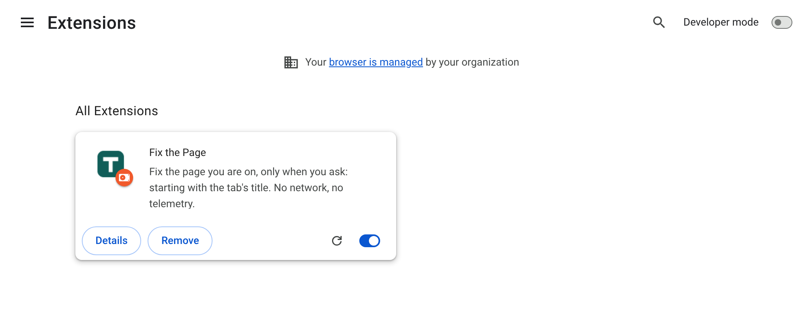
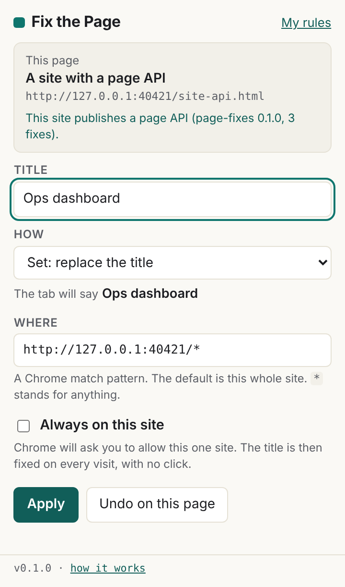

Install
Fix the Page is installed by loading it unpacked, from a clone of its repository or from the release zip. You can read every file before Chrome runs it. Chrome shows no "read and change all your data" warning, because the extension asks for none of that. Under a minute, either way.
git pull plus the reload arrow is the whole update. The zip is for a reader who does not use git, and it carries a published SHA-256 so what you unzip is what was released.Route A: from a clone of the repository
Clone the repository
In a terminal:
$ git clone https://github.com/SGit-AI/SGit-AI__Website__Chrome-Extension__Fix-The-Page.git $ cd SGit-AI__Website__Chrome-Extension__Fix-The-Page
The extension is the
extension/folder. Everything else is this site, the tests and the build tooling.Open Chrome's extensions page
Type
chrome://extensionsin the address bar. Chrome's own tutorial puts it this way: "Go to the Extensions page by entering chrome://extensions in a new tab."Turn on Developer mode
The switch is at the top right of that page. Chrome: "Enable Developer Mode by clicking the toggle switch next to Developer mode."
Load unpacked, and pick
extension/Chrome: "Click the Load unpacked button and select the extension directory." Choose the
extensionfolder inside your clone, not the repository root. Fix the Page appears in the list, and its icon in the toolbar (you may need to pin it from the puzzle-piece menu).
chrome://extensions after Load unpacked. The card shows the version; the options page shows the commit it was built from.
To update: git pull, then click the reload arrow on the extension's card. The options page footer shows which version and commit you are running.
Route B: from the release zip
Download
fix-the-page-v0.1.0.zip, with its SHA-256. To check it:
$ shasum -a 256 fix-the-page-v0.1.0.zip # compare with the hash on the source page
Unzip
Into a folder you will keep. Chrome loads the extension from that folder every time it starts; if you delete it, the extension stops.
chrome://extensions, Developer modeAs in Route A, steps 2 and 3.
Load unpacked, and pick the unzipped folder
The one that holds
manifest.json.
To update: download the new zip, unzip it over the old folder (or into a new one and load that), then click the reload arrow.
Your first fix
Open any normal web page and click the Fix the Page icon. The popup shows the page's title and address, with the title ready to edit.

Type a title and press Enter or Apply. The tab changes at once. That is the whole of the on-demand route: nothing was saved, and the page gets its own title back when you leave or reload. The title fix page covers the modes, the patterns, and keeping a title on a site.
What Chrome will and will not ask
- At install: nothing about your data. The only standing permission that touches pages is
activeTab, and Chrome's documentation says it "displays no warning message during installation". - When you tick "Always on this site": Chrome's own prompt, for that one site. The extension lists
https://*/*andhttp://*/*as optional host permissions, which Chrome's documentation describes as the way "to request hosts that you only discover at runtime"; nothing under them is granted until you say yes, site by site. - On Chrome's own pages: the popup says "Chrome does not allow extensions on this page". Chrome's documentation: "Access is not granted to restricted pages, such as chrome:// pages."
The keyboard shortcut
The suggested shortcut is Alt+Shift+T, which opens the popup for the current tab. If another extension already has it, Chrome leaves it unset; you can set one at chrome://extensions/shortcuts. The options page shows the shortcut that is in force.
Uninstall
Remove it from chrome://extensions. Chrome deletes the extension's storage with it, so your rules go too: export them first from "My rules" if you want to keep them.